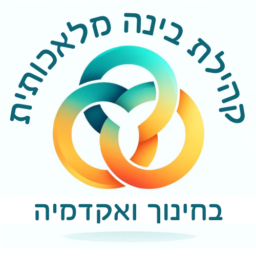

כס המשפט
בעידן המכונה
נעים להכיר
- עשרים שנה כאיש חינוך, חלקן בניהול מערכות חינוך: הקמה וניהול בית ספר, סגן מנהל פסג"ה תל אביב-יפו, אחראי פן חברתי-רגשי במדעני העתיד
- שלוש השנים האחרונות: רק הממשק שבין בינה מלאכותית לארגוני למידה והוראה - משרד החינוך, האקדמיה, וליווי התייעלות במגזר העסקי
- מנחה הפודקאסט "דיבורי בינה", מנהל קהילת "בינה מלאכותית בחינוך ובאקדמיה" בפייסבוק, וכותב יחד עם פרופ' אמנון גלסנר את הספר "אהבת למידה וחדוות גילוי"
- תחום מומחיותי: הפילוסופיה של הטכנולוגיה. מחבר המאמר "משפט יעיל, משפט ריק", שעליו נשענת ההרצאה




גילוי נאות
אינני משפטן ואיני בקיא בתחום המשפט. תחום מומחיותי הוא הפילוסופיה של הטכנולוגיה, ובפרט טכנולוגיית הבינה המלאכותית.
מאמר זה הוא פרי חשיבה היברידית - משותפת לי ולבינה מלאכותית.
את הרעיונות שביסודו הבאתי מעולמות מגוונים - חינוך, אקדמיה, יחסים בין-אישיים ועוד - מתוך עשייה עשירה ורחבה בשדות מקבילים ובשאלות מקבילות, ומיזגתי אותם עם עולמות המשפט, החוק והצדק. הבינה המלאכותית סייעה בסקירת הספרות, בסיעור מוחות, בהגהה, בניסוח, ובאריזת המחשבות לכדי המסמך שלפניכם.
המאמר שואף לדיוק מלא - בעובדות, בייחוסים ובאסמכתאות. ועם זאת, הוא נכתב מחוץ לכותלי האקדמיה: אם נפלה טעות, אם ציטוט אינו מדויק, או אם לא הבנתי רעיון כהלכה - אשמח שתעמידוני על טעותי, ואתקן.
המפגש שבין טכנולוגיית הבינה המלאכותית למערכת המשפט
נתחיל אנקדוטלי ופשוט יחסית
ונסיים במורכב והמדאיג
החברה אל מול
המערכת
הנגשת הצדק
הבינה המלאכותית מאפשרת להנגיש צדק להמונים, במגוון דרכים:
- ייעוץ משפטי
- עזרה בכתיבת ערעורים על דוחות תנועה
- סיוע למי שאינו אוריין מבחינה שפתית
- הקראה למי שאינו יודע לקרוא
- גישור על פערי שפה
מבחינה זו - ברכה של ממש, ועשיית צדק באופן ממשי ומוחשי.
עורך דין בכל כיס
- קריאה של מסמכים משפטיים מסובכים, שהבינה המלאכותית מסבירה לאדם ההדיוט
- התמודדות עם גופים כמו בנקים, שמפילים על האזרח עשרות אם לא מאות עמודים לחתימה - למשל במעמד חתימה על משכנתא
האזרח המצויד בבינה מלאכותית מקבל מאזן כוח אל מול הגופים החזקים שמולו.
פרדוקס ג'בונס
ויליאם סטנלי ג'בונס·1865·על שאלת הפחם
- מנועי קיטור יעילים יותר לא הקטינו את צריכת הפחם בבריטניה - הם הגדילו אותה
- כשמשהו נעשה זול וזמין יותר, משתמשים בו יותר
יותר ערעורים, יותר תביעות קטנות וכו' - כי עכשיו אפשר.
העומס רק ילך ויגבר במרוץ חימוש אסימטרי
וכבר מאותת לנו את הסכנה
- מערכת המשפט נמצאת כבר היום בעומסים עצומים
- צ'אט המשפט וצעדים נוספים - צעדים מבורכים, והמערכת מתקדמת בהם מאוד
- ועדיין, ארגון גדול ובירוקרטי, שחייב לשמור על האתיקה ועל מעמדו, אינו יכול להתקדם בקצב של הטכנולוגיה שזמינה לאזרח
- כמו הרגולטור, המחוקק בהליך מדיני, אל מול טכנולוגיה שרצה קדימה במהירות חסרת תקדים
חשוב לציין את האדם האנלוגי בעידן הדיגיטלי
ואת עלות הכלים
- מי שאינו אוריין דיגיטלית - מודר מהאירוע
יש כאן גם פילוג חברתי: החזקים מתחזקים והחלשים נחלשים.
הצדק מוזל ומתייקר
(עשיית הצדק)
גם מי שאין בכיסו את הממון לשלם על כלים בתשלום - מודר.
מהאנקדוטלי
לרחב
על כתפיהם של ענקים
מאפיינו של המשפט
והמפגש עם איכותה של הבינה האנושית
חדירת הבינה המלאכותית למשפט אינה שדרוג אינסטרומנטלי אלא
שינוי-משטר במקורות הלגיטימציה המשפטית
אינה שהמכונה תיכשל, אלא שהיא
תצליח
ששת תנאי הלגיטימציה של המשפט
נימוק פומבי - הכרעה שלטונית חייבת להיות מלווה בהצדקה נגישה, הניתנת לבחינה ולערעור בידי נמעניה.
אותנטיות אפיסטמית של הרשומה המשפטית - התקדים המצוטט אכן ניתן, נוסחו הוא נוסחו, ואפשר להתחקות אחר שרשרת המקורות עד למקור מוסמך.
מצפון אנושי בהכרעה - הכרעה שיפוטית איננה יישום דדוקטיבי של כלל על עובדות אלא מעשה של תבונה שאינה ניתנת לרדוקציה שנקנתה בניסיון חיים.
כלליות ושוויון בפני החוק
פומביות, בהירות וקביעות - גלויה ומובנת למי שהיא חלה עליו ויציבה די הצורך כדי שניתן יהיה לתכנן חיים לאורה.
כושר תיקון מוסרי - יכולתה של השיטה לזהות את עוולותיה ולתקנן (ביטול העבדות, שוויון האישה וכו').
פגיעה בכל אחד מתנאי הלגיטימציה של המשפט אינה מורידה את איכות המשפט אלא מבטלת את הווייתו היסודית כמשפט
נראות של מערכת בתפוקות גבוהות
שהיתה משפט ומקור סמכותה היה לגיטימי
ודעכה לכדי מערכת בקרה חברתית
ששת תנאי הלגיטימציה של המשפט
אל מול
איכויותיה של הבינה המלאכותית
הנימוק הפומבי מול הקופסה השחורה
הנימוק הפומבי מול הקופסה השחורה
- הכרעה שלטונית קונה את סמכותה מן הנימוק.
- הגיון חייזרי.
- וגם אילו יתפתח תחום ההסברתיות.
- גם כאשר האדם חותם - הטיית האוטומציה ופריקה קוגניטיבית.
- הפריצה היא במקור סמכותו הלגיטימי של הדין.
הגירת מקור הסמכות מן הנימוק הפומבי אל החישוב הסמוי.
ערמומיות הפריצה:
כלפי חוץ פסקי הדין ייראו מנומקים ורהוטים מאי פעם, בעוד שהקשר הפנימי בין הנימוק המוצהר לבין ההכרעה בפועל יישחק בשקט ובהזדחלות.
מה בין קופסה שחורה מבוססת פחמן לקופסה שחורה סיליקונית?
הנימוק של השופט האנושי מחייב את כותבו, חשוף לתקיפה בערעור, ניתן לאבחון והפרכה וכופה על השופט משמעת מחשבתית בעצם הצורך לנסחו כך שיעמוד בביקורת.
בעל הדין המבקש לערער יודע היכן לתקוף: בקביעת עובדה זו, בפרשנות זו, במשקל שניתן לשיקול זה.
הרציונליזציה האנושית של השופט, בניגוד לזו החייזרית, היא בת תקיפה גם אם היא אינה בת אימות.
הגירת (או דעיכת?) מקור הסמכות מן הנימוק הפומבי אל החישוב הסמוי.
זיהום התקדים
זיהום התקדים - קריסת האותנטיות האפיסטמית של הרשומה
הנחה: כל הלכה נשענת על שרשרת מתועדת של הכרעות אנושיות אמיתיות - סכסוך שהתרחש, בעלי דין שטענו, שופט ששמע, הכריע ונטל אחריות על הכרעתו.
סמכותה של הרשומה המשפטית נובעת מהיותה תיעוד נאמן של מעשי שיפוט (שיפוט ולא אחר) שארעו בפועל.
המשפט אינו רק שיטת הכרעה - הוא מוסד אפיסטמי עם מנגנון שהיה עמיד, ואולי חולשתו מתגלה אל מול נגיף שמערכת החיסון שלו אינה מכירה.
פריצה בארבעה שלבים
מודלי שפה מייצרים הזיות.
חציית ההזיות מן הכלי אל האולם - טקסטים משפטיים סינתטיים חוצים את סף בית המשפט בהתחזות לאסמכתא אמיתית ואינם מזוהים על ידי המנגנון.
חלחול אל הרשומה וזיהום התקדים - כתב טענות המצטט אסמכתא בדויה הוא מסמך המנוח בתיק, אך פסק דין החוזר על אסמכתא כזו בלא בדיקה מעניק לבדיה גושפנקא ומטשטש את עקבותיה.
זיהום נתוני האימון ומגמה של קריסת מודל.
הזכרון המוסדי של המשפט נחשב אמין לא משום שנבדק בכל שימוש, אלא משום שדרך ייצורו - איטית, פומבית, חתומה על ידי אנוש הנושא אחריות - ערבה לו.
האותנטיות האפיסטמית של הרשומה - היותה מקור ידיעה ולא מאגר עשיר של טקסטים.
ואכן, טעויות אנוש כבר היו וישנם מנגנוני תיקון, אבל:
הסכנה: משפט שרשומותיו מזוהמות עשוי לפעול ביעילות גוברת לזמן מה, תוך שסמכותו הנגזרת מן האותנטיות של הרשומה הולכת ונשחקת.
הדחת המצפון האנושי
מי רשאי לשאת באחריות להכרעה שבכוחה לשלול את חירותו של אדם?
על חשיבותו של נסיון החיים הנובע מהוויה רבת שנים כתודעה אנושית השוכנת בתוך גוף בעולם גשמי.
מה בין זה למצפונה של המכונה?
הלגיטימציה של הכרעת הדין אינה נובעת מכך שהיא מדוייקת יותר,
גם תוך הכרה בכך שהדיוק הוא צדק,
אלא משום מקור השיפוט האנושי.
הדין הפרסונלי אל מול הכלליות והשוויון בפני החוק
נורמה כללית מכוננת קהילה של שווים וזירה ציבורית בה מתנהל השיח על תוכנו של הדין.
אין עוד אדם סביר שאפשר להדיין עליו בפסיקה, בכיתה, בבית המחוקקים, אלא מיליוני ציונים אישיים.
הדין הפרסונלי אינו מפר את הבטחתו - הוא מדייק, הוא מגן, הוא מתאים, ובמונחי תפוקה ייתכן שהוא עדיף על כל דין אחר.
אין כאן תקלה או חולשה של המכונה שיש לתקן כמשקל ההזיות.
אך תוך כדי כך הוא מפרק את מה שהכלליות והשוויון מגלמים:
מיקומו של סטנדרט משותף אחד, גלוי לוויכוח, שבני הקהילה הפוליטית כפופים לו יחד כשווים.
נדידת מקור הסמכות מן הכלל שציבור של שווים נתן לעצמו אל הכיול שמערכת מחשבת עבור כל אדם לבדו.
אובדן הפומביות, הבהירות והקביעות
המערכת החישובית מספקת את המבוקש - דין מעודכן תמיד, נאכף בשלמות, ביעילות ומותאם למציאות ללא פיגור -
ובה בעת מפרקת את התנאים שבזכותם הדין היה ראוי לציות ולא כפוי על נמעניו.
הנעילה הנורמטיבית ואובדן כושר התיקון המוסרי
אילו היינו מאמנים את המודל על הפסיקה האנגלו-אמריקאית עד אמצע המאה התשע-עשרה.
דיוק ניבוי מרשים ללא צדק.
הפריצה של המשפט בקפיצות הגדילה שלו אינן אקסטרפולציה סטטיסטית של נתוני העבר אלא שבירה מכוונת של הדפוס שעלותה האנרגטית רבה.
אם כך, נאמן את המודלים על שוויון, הוגנות וכבוד האדם.
אימון על ערכים נכונים הינו מה שהיה עושה טכנולוג בינה מלאכותית במאה התשע-עשרה.
החלפה של נעילה בנעילה ערמומית יותר.
המרתו של הדין ממערכת המתקנת את עצמה מבפנים, מתוך מאבק, במערכת המתעדכנת מבחוץ בידי מי ששולט בה.
הסמכות לקבוע מהו ערך ראוי נודדת מן הזירה הציבורית - בתי מחוקקים, ערכאות, מאבקים חברתיים - אל חדרי האימון של מי שמחזיק במודל ואינו חב לציבור דין וחשבון.
משפט שהרשומה שלו סינתטית, שהנמקתו אטומה, שכלליו פרסונליים ונוזליים ושכושר-תיקונו נעול - אינו חדל לתפקד.
הוא מתפקד היטב, אולי טוב מתמיד: הוא מכוון התנהגות, מקצה סיכונים, מייצר צייתנות.
אלא שהוא עושה זאת כמערך ויסות של מיקרו-תמריצים - בקרה חברתית יעילה - ולא כמוסד המדבר אל אזרחיו בשפת הטעמים.
האזרח חדל להיות נמען של הצדקה והופך לאובייקט של ניהול סיכונים.
התרוקנות הלגיטימציה בד בבד עם שיא היעילות - משפט מקסימלי ביעילותו ומינימלי בלגיטימיותו.
אז מה עכשיו?
האם להשתמש בבינה מלאכותית בבתי המשפט?
בוודאי שכן.
תודה רבה